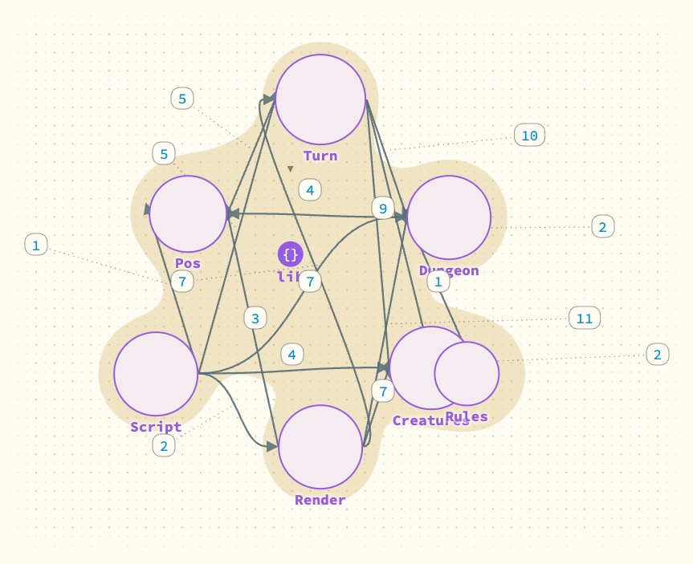
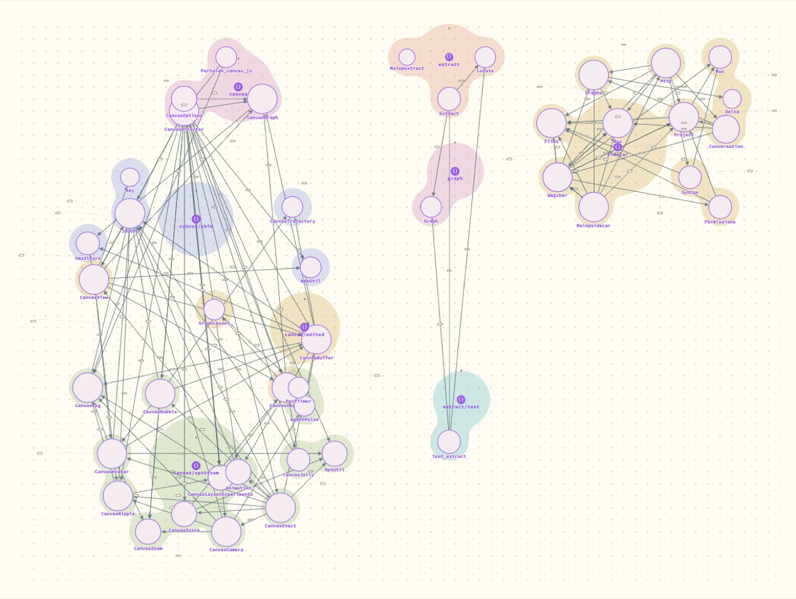

Is a map of modules a better front door than a menu?
For a small project, yes. At 40 modules it shows the project's large-scale shape at once, and one fact about Portolan I had only inferred from the source, but the busiest part is a knot. Not tried at Hazel's size.
- Why
The page shows one module at a time and offers the rest in a menu. Entry 2 found 853 names in that menu for Hazel. The page needs a level above the module.
- What I did
Added "map of modules" to the menu. It is made on the page from the graph the extractor already sends: a node for each top-level module, an arrow from a module to each module it uses (a function, value or type), and a region for each folder. Clicking a module opens it. The canvas draws it like any other graph, with whichever layout is chosen. Tried on the dungeon example (7 modules) and on Portolan (40).
What happened

Script and Turn use everything; Pos uses nothing. The numbers counted how many names each arrow stands for, and were dropped afterwards as noise.
The three islands are the finding. The graph record is meant to be the boundary between the extractor and the canvas, yet no arrow reaches Graph from the canvas or from the sidecar: both handle its JSON themselves. Entry 1 guessed this from a repeated cluster of helpers; here it is one look.
The left island is Hazel's canvas code, where nearly every module uses nearly every other, and the map can only say so.
- What it means
Worth keeping as the way in. Two things are needed before it works at size: a level above it (folders as nodes, opened in place), and a way to thin a dense island, for instance showing only the arrows that are not implied by others.
- Not done
Hazel. Module size shown on the node. The map combined with entry 8, so each module shows what its interface exports. An arrow drawn with no label still leaves a small empty chip.